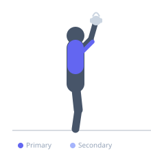

Exercise guide / Kettlebell Press
Kettlebell Press
The kettlebell press is a unilateral overhead pressing exercise performed from the kettlebell rack position, pressing the bell directly overhead to full arm lockout. The offset center of mass of the kettlebell compared to a dumbbell requires greater forearm and wrist stability to control the bell path. As a strict press with no leg drive, it isolates the deltoid, triceps, and upper trapezius, while the unilateral nature demands significant anti-lateral flexion core engagement throughout.
Primary muscles
deltoid anterior
triceps long head
trapezius upper
Secondary muscles
infraspinatus
supraspinatus
Stabilizers
internal oblique
external oblique
transverse abdominis
Equipment
Kettlebell

Starting position
- Stand with feet shoulder-width apart. Kettlebell in the rack position on the right side — bell resting on the forearm, elbow close to the body, upper arm vertical.
Setup
- Clean the kettlebell into the rack position to begin. Stand tall with the torso upright.
Steps
- Step 1: Begin in the racked position with the bell at shoulder height, elbow close to the torso.
- Step 2: Press the kettlebell directly overhead by extending the elbow and driving the hand upward.
- Step 3: Lock out the arm fully overhead — the bicep should be near the ear.
- Step 4: Lower the bell under control back to the rack position.
- Step 5: Complete all reps on one side before switching.
Coaching cues
- Press straight up — not forward
- Lock out — bicep near the ear
- Stay tall — no lean
Breathing
- Exhale on the press. Inhale on the return to rack.
Range of motion
- Full elbow lockout overhead. Full return to racked position.
Tempo
- 3–8 reps per side. Controlled tempo — 2 seconds up, pause at top, 2 seconds down.
Common mistakes
- Side-bending away from the bell — maintain an upright torso
- Not fully locking out the elbow at the top
- Starting with the elbow flared out — it should be close to the body in the rack
Safety
- Shoulder impingement or instability should be assessed before heavy overhead pressing.
- Ensure full lockout on each rep to protect the shoulder joint.
Training
- strength: 3–6 reps
- hypertrophy: 6–10 reps
- strength: 3–5 sets
- hypertrophy: 3–4 sets
- Rest: {'strength': 180, 'hypertrophy': 90}